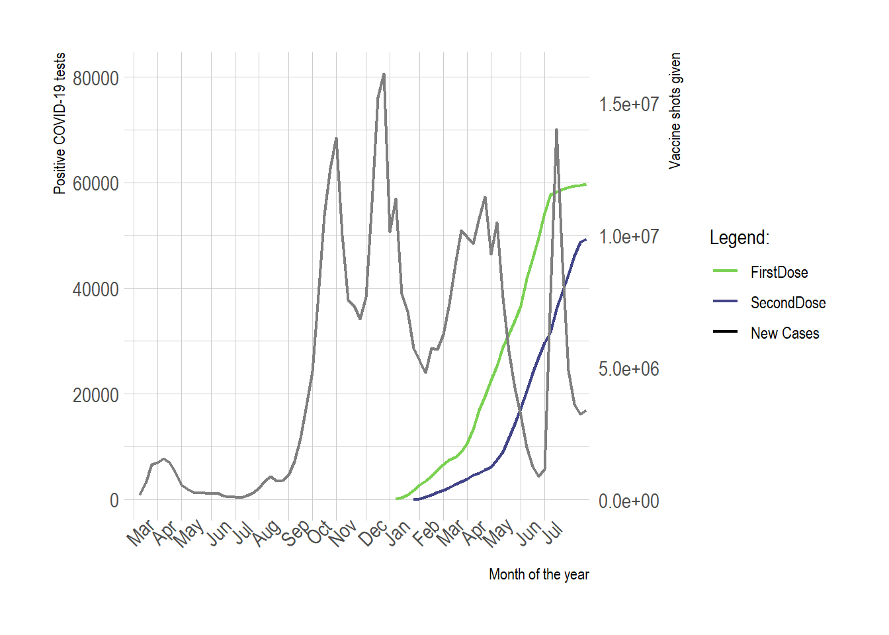
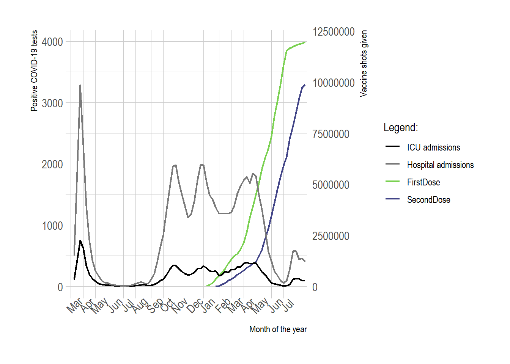

9 The effect of vaccinations
in January of 2020 the first covid-19 cases where confirmed in Wuhan, Hubei, China. The SARS-COV-19 virus then continued to spread across the world. By now we have all lived through the effects of the SARS-COV-19. However with vaccinations programs now gaining speed in America, European countries, most of Asia-Pacific and starting in Africa, the SARS-COV-19 Pandemic seems to be coming to an end. In this report i want to show the effect of vaccination programs, and highlight certain events and their effect on the spread of SARS-COV-19.
require(tidyverse)
require(readxl)
library(utils)
library(kableExtra)
library(captioner)
library(zoo)The European Centre for Disease Prevention and Control (ECDC) provides dataset for vaccination rates and covid-19 cases and associated deaths.
# data_daily_cases <- read.csv("https://opendata.ecdc.europa.eu/covid19/nationalcasedeath_eueea_daily_ei/csv", na.strings = "", fileEncoding = "UTF-8-BOM") # date of access:
data_weekly_testing <- utils::read.csv("https://opendata.ecdc.europa.eu/covid19/testing/csv", na.strings = "", fileEncoding = "UTF-8-BOM") # date of access:
data_hospital <- utils::read.csv("https://opendata.ecdc.europa.eu/covid19/hospitalicuadmissionrates/csv", na.strings = "", fileEncoding = "UTF-8-BOM") # date of access:
data_vaccine <- utils::read.csv("https://opendata.ecdc.europa.eu/covid19/vaccine_tracker/csv", na.strings = "", fileEncoding = "UTF-8-BOM") # date of access:write.csv(data_weekly_testing, "data/ECDC_testing.csv")
write.csv(data_hospital, "data/ECDC_hospital.csv")
write.csv(data_vaccine, "data/EVDV_vaccine.csv")data_weekly_testing <- read.csv("data/ECDC_testing.csv")
data_hospital <- read.csv("data/ECDC_hospital.csv")
data_vaccine <- read.csv("data/EVDV_vaccine.csv")9.1 Trimming & Joining dataframes
For the visualization it’s necessary to have a single dataframe containing all the variables needed for the plot. I’m planning to join the needed columns of the dataframes by their matching date and country rows.
All the dataframes have the date in a year week format (YYYY-Www). But the column names for date and country columns vary, and the hospital dataset only has country column values as whole names, while vaccine only has it as country codes. Luckily the testing dataset has both. Also the Hospital admission dataset has daily covid related occupancy and weekly new COVID-19 related patients admissioned per 100k population. Only the weekly hospitol and ICU admissions are needed for this report.
The variables needed for the visualization are:
- year_week - the date in YYYY-Www format
- country - name of country
- region - country code
- new_cases - Number of new confirmed cases
- population - population of country
- value - Number of patients or new admissions per 100 000 population
- Indicator - If hospital occupancy is either:
- Daily hospital occupancy (number of COVID-19 patients in hospital on a given day)
- Daily ICU occupancy (number of COVID-19 patients in ICU on a given day)
- Weekly new hospital admissions per 100k (weekly rate of new admissions of COVID-19 patients per 100 000 population)
- Weekly new ICU new admissions of COVID-19 patients per 100k.
- Daily hospital occupancy (number of COVID-19 patients in hospital on a given day)
- FirstDose - Number of first dose vaccine administered to individuals during the reporting week.
- SecondDose - Number of second dose vaccine administered to individuals during the reporting week.
- Vaccine - Name of vaccine
- COM = Comirnaty – Pfizer/BioNTech
- MOD = mRNA-1273 – Moderna
- CN = BBIBV-CorV – CNBG
- SIN = Coronavac – Sinovac
- SPU = Sputnik V - Gamaleya Research Institute
- AZ = AZD1222 – AstraZeneca
- UNK = UNKNOWN
- COM = Comirnaty – Pfizer/BioNTech
- TargetGroup - Target group for vaccination.
data_weekly_testing <- data_weekly_testing %>% dplyr::filter(level == "national")
data_weekly_testing <- data_weekly_testing %>% dplyr::select(country,
country_code,
year_week,
new_cases,
population)
data_hospital <- data_hospital %>% dplyr::select(country,
year_week,
value,
indicator)
data_hospital <- data_hospital %>%
dplyr::filter(indicator == "Weekly new ICU admissions per 100k" | indicator == "Weekly new hospital admissions per 100k")
data_vaccine <- data_vaccine %>% dplyr::select(YearWeekISO,
Region,
FirstDose,
SecondDose,
Vaccine,
TargetGroup)data_vaccine <- data_vaccine %>% dplyr::rename(year_week = YearWeekISO, country_code = Region)The three datasets contain different ranges of dates. If the datasets are to be joined the dataset with the largest date range needs te be selected. In this case that’s the Hospital admissions dataset. by joining the other datasets to the hospital admissions dataset NA values will be implemented for variables where no data is available for that date.
Table 1: The earliest and latest dates of each dataset. The hospital admissions dataset contains the longest date range. However it just doesn’t contain the 2 latest weeks that the Vaccinations dataset does contain.
| dataset | Earliest.date | Latest.date |
|---|---|---|
| Testing | 2020-W01 | 2021-W31 |
| Hospital admissions | 2019-W49 | 2021-W31 |
| Vaccinations | 2020-W52 | 2021-W32 |
The vaccine dataset has its data for FirstDose and SecondDose split between different vaccines and targetgroups. This will cause duplicate datapoints in the new_cases and value rows if the dataset are joined. So the vaccine dataset is collapsed so that FirstDose and SecondDose represent the total vaccinations given that week, no matter which vaccination or in which targetgroup.
sum_firstdose_before <- data_vaccine$FirstDose %>% sum()data_vaccine <- data_vaccine %>%
dplyr::group_by(year_week, country_code) %>%
dplyr::transmute("year_week" = year_week,
"country_code" = country_code,
"FirstDose" = sum(FirstDose, na.rm = T),
"SecondDose" = sum(SecondDose, na.rm = T)) %>% unique()There is no change in the sum of FirstDose, so the collapsing of the data went correctly.
data_vaccine$FirstDose %>% sum() == sum_firstdose_before## [1] TRUEThere seem to be duplicate rows in the testing dataset, when the datasets get joined this could cause duplicate datapoints.
data_weekly_testing %>% unique() %>% nrow() == data_weekly_testing %>% nrow()## [1] TRUEdata_weekly_testing <- data_weekly_testing %>% unique()data_covid <- dplyr::left_join(data_hospital, data_weekly_testing, by = c("country", "year_week") )
data_covid <- dplyr::left_join(data_covid, data_vaccine, by = c("year_week", "country_code"))There is no diffrence between the sum of new_cases between the orginal dataset and the joined dataset so the join is succesful.
data_weekly_testing %>% dplyr::filter(country == "Netherlands") %>% pull(new_cases) %>% sum(na.rm = T) - data_covid %>% dplyr::filter(country == "Netherlands", indicator == "Weekly new hospital admissions per 100k") %>% pull(new_cases) %>% sum(na.rm = T)## [1] 09.2 Visualization
Figure 1: Positive COVID-19 test (left Y-axis) and the cumaltive vaccine doses given (right Y-axis). In this plot it can be seen that during the “ramp up” of vaccine shots given (starting in march), positive COVID-19 cases went down. However it can also be seen that startig June the positive COVID-19 cases shot up, while the vaccinated population during this time was almost half the population.
 The effect of vaccines can’t really be seen in this plot. That is not to say that there is no effect, the true effect of vaccination could only really be shown in a graph like this once group immunity start having effect. Which is why proper precautions are important before group immunity starts having effect. However the effect of vaccination is visible in the occupancy of hospitals and ICU.
Figure 2: The effect of a vaccinated population on hospital and ICU admissions.it can be seen the the weekly hospital (x) and ICU addmissions (x) decrease while the vaccinated population increases.

In this plot it is seen that the weekly admission rate of the hospitals and ICU goes down as vaccinations start. And during the third wave (July 2021) the COVID-19 related hospital and ICU admissions is less compared to the occupancy before vaccination started.
#Show the three highest new case amounts. (new cases has duplicate value's because of dose column)
cumsum_data_covid$new_cases %>% sort() %>% tail(n=6)
max_cases <- cumsum_data_covid %>%
filter(Dose == "FirstDose", new_cases == 80594 | new_cases == 76154 | new_cases == 70155) %>%
dplyr::select(year_week, new_cases, hospital, ICU)## [1] 70155 70155 76154 76154 80594 80594Table 2: Overview of the three highest case counts over the period of January 2020 untill July 2021.
kableExtra::kbl(max_cases) %>%
kableExtra::kable_material(full_width = FALSE)| year_week | new_cases | hospital | ICU |
|---|---|---|---|
| 2020-W51 | 76154 | 1735 | 288 |
| 2020-W52 | 80594 | 1981 | 293 |
| 2021-W28 | 70155 | 277 | 34 |
The three highest new case counts. Two from the peak during December 2020, and one from the peak during July 2021. The difference in hospital and ICU admissions is clear and could be attributed to the vaccinated population.